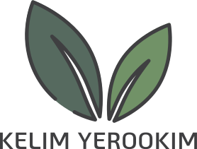

עגלת קניות
עגלת קניות
כלי העץ שאנו מייבאים הם המילה האחרונה בכל הנוגע לשימושיות, איכות וידידותיות לסביבה. קו מוצרים זה מבוסס על תפיסה משולבת של חדשנות, אחריות סביבתית וטעם הקהל. הכלים הייחודים שלנו זוכים לפופולריות רבה בקרב עסקי ההסעדה, לא רק בזכות הגימיק שגלום בהם, אלא גם בזכות יופיים, נוחות השימוש בהם והעובדה שהם עשויים עץ טבעי ולכן אינם פוגעים בסביבה ואינם מצריכים איסוף ומחזור נפרד, כמו כלים חד-פעמיים מפלסטיק. אנו שמחים להציע לכם מבחר גדול של סכו"ם, מגשים, צלחות וכלים חד-פעמיים נוספים מהשורה הראשונה, שהופכים כל אירוע לחוויה בלתי נשכחת. לחצו על הקישור "כלי עץ חד-פעמיים" כדי לצפות בקטלוג, או צפו ברשימת הלקוחות שלנו.
קראו עוד